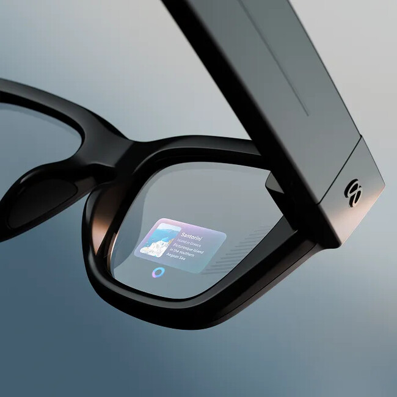

¿Por qué la he elegido?
La Meta Neural Band es una pulsera que se presentó en septiembre de 2025 junto con las gafas Meta Ray-Ban Display. La he elegido porque es un dispositivo muy reciente y cambia la forma de manejar un aparato: en vez de tocar una pantalla o hablar, basta con hacer un pequeño gesto con los dedos.
Me parece que tiene mucha relación con la IPO porque resuelve problemas que vemos en la asignatura, como que la interacción sea cómoda, que se pueda usar en cualquier situación y que sea accesible para más personas.
Beneficios
- Funciona sin ver la mano. Se puede usar con el brazo caído o con la mano en el bolsillo.
- Es discreta. No hace falta hablar en voz alta ni sacar el móvil, por lo que se puede usar en clase o en una reunión sin molestar.
- Cansa menos. No hay que levantar el brazo para tocar las gafas.
- Puede ayudar a personas con poca movilidad, porque detecta señales muy pequeñas de los músculos.
- Permite escribir mensajes dibujando las letras con el dedo sobre cualquier superficie.
Cómo funciona
Cuando queremos mover un dedo, el cerebro manda una señal eléctrica a los músculos del antebrazo. La pulsera tiene sensores de electromiografía (EMG) que detectan esa señal desde la piel, y un programa de inteligencia artificial la traduce en un gesto.
Los gestos principales son juntar el pulgar con otro dedo para seleccionar, deslizar el pulgar sobre el índice para moverse por los menús y girar la muñeca como si fuera un botón.
Las gafas con las que se usa tienen una pequeña pantalla en la lente derecha donde se ven mensajes, el mapa, subtítulos o la música.
| Nombre | Meta Neural Band |
|---|---|
| Fabricante | Meta |
| Presentación | 17 de septiembre de 2025 |
| Tecnología | Electromiografía (EMG) e inteligencia artificial |
| Batería | Hasta 18 horas |
| Resistencia al agua | IPX7 |
| Precio de lanzamiento | 799 $ con las gafas |
| Limitación | Solo funciona con las gafas Meta Ray-Ban Display |
Fotos



Evolución: qué dispositivos sustituye y cómo los mejora
Esta pulsera no reemplaza a un único aparato, sino a varias formas de comunicarnos con un ordenador que han ido apareciendo con el tiempo:
- Teclado y ratón (años 60-80). Obligan a estar sentado con las dos manos ocupadas. La pulsera se puede usar de pie y andando.
- Pantalla táctil del móvil (2007). Hay que tener una mano libre y mirar la pantalla. Con la pulsera ya no hace falta sacar el móvil.
- Asistentes de voz (Siri, Alexa). Dejan las manos libres, pero no son discretos y fallan con ruido. La pulsera funciona en silencio.
- Google Glass (2013). Fueron unas de las primeras gafas con pantalla y se controlaban con la voz y un panel táctil en la patilla. No tuvieron éxito.
- Pulsera Myo (2014). Ya usaba señales musculares, pero era poco precisa y se dejó de vender. La Neural Band usa la misma idea, pero con una IA mucho mejor.
- Gafas Ray-Ban Meta (2023). Llevan cámara y asistente de voz, pero no tienen pantalla. Las nuevas gafas sí la tienen y la pulsera sirve para manejarla.